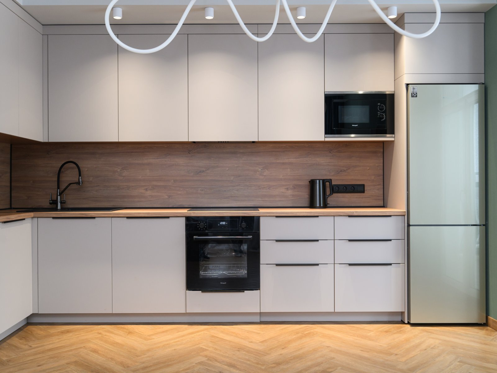

КУХНИ И ВСТРОЕННАЯ МЕБЕЛЬ НА ЗАКАЗВаша мебель.
Ваша мебель.
От замера до монтажа.
Корпусная и встроенная мебель по индивидуальным размерам. Собственное производство, проектирование и установка.
Обсудить мой проект
МАТЕРИАЛЫ И РЕШЕНИЯПланировка снаружи.
Планировка снаружи.
Порядок внутри.
Подберём расположение техники, секции для посуды и наполнение ящиков. Согласуем не только фасады, но и ежедневное удобство вашей кухни.
Рассчитать мой проект